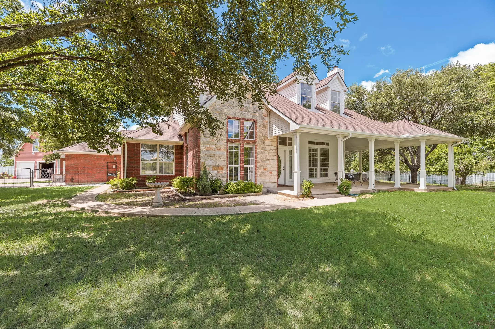
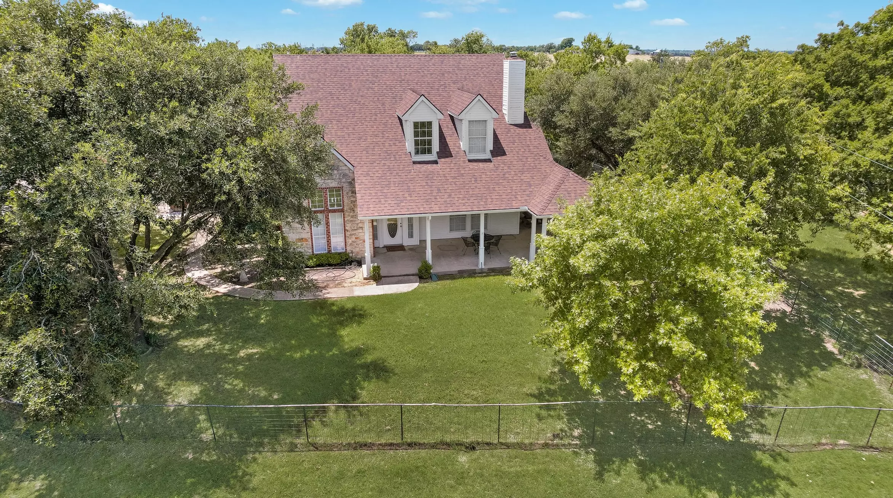

Real property images from the public listing for 7029 FM 2757, Crandall, TX 75114 are now anchoring the homepage while the monastery-specific media set continues to expand.
Purchased land
New monastery property in Crandall, Texas
We now have a real place to build. The purchased property is approximately 10 acres in Crandall, Texas and will become the future home of the monastery, prayer life, hospitality, and community gathering.
View property listing
Land secured • now we build
1
Purchased property
Next
Site prep and permitting
Now
Construction fundraising campaign
We purchased the land. Help us build Hara Monastery.
This is a major turning point. Hara Monastery is no longer just a vision on paper — we now have land in Texas for the monastery campus. Our mission now is to raise the funds needed for site work, church construction, utilities, and the first phase of the monastery grounds.
From planning a monastery to building on purchased land
The story of the website has to change because the project itself has changed. We are no longer speaking only about a future dream or a possible site. By God’s grace, land has been purchased. That means every page of this site now needs to speak clearly about construction, stewardship, and the next practical steps to bring the monastery to life.
Real property, real next steps
The immediate focus is no longer searching for land. It is preparing the site, funding utilities and access, and moving toward the first construction phase.
A build campaign, not only a membership drive
Donations now support visible, physical outcomes: surveying, engineering, permits, foundations, worship space, and long-term monastery infrastructure.
A place for prayer and community
The purchased land is meant to become a sacred home for liturgy, retreat, teaching, hospitality, and Ethiopian Orthodox life for generations.
What we are building on the land
The long-term vision is a full monastery campus rooted in prayer, community life, and Ethiopian Orthodox tradition. The first phases will focus on making the property usable and preparing for a permanent place of worship.
- Site preparation and land readiness
- Permitting, engineering, and utility access
- Construction of the first worship and gathering spaces
- Infrastructure for future monastery expansion
- Spaces for hospitality, teaching, and community events
Build fund priorities
Every gift now helps move the project from acquired land to actual construction. We want donors to understand exactly why the need has grown: the land is secured, but the building phase is what comes next.
Support constructionThe need has changed from acquisition to construction
Site work
Preparing the land, access, grading, and making the property ready for safe and lawful development.
Design and approvals
Engineering, architectural work, planning documents, and the city and county approvals needed to build correctly.
Construction itself
Raising the structure, worship space, community facilities, and the core utilities needed for a functioning monastery campus.
Suggested build roadmap
-
Finalize site assessments, surveying, access planning, and early property preparation.
-
Advance plans, secure approvals, and prepare utility and construction logistics for the first structures.
-
Begin the first major build effort for prayer, gathering, and the future monastery footprint.
Property and planning visuals
We are reorganizing the media around the newly purchased land and the future construction campaign. As more confirmed property media is added, this gallery should center the land, maps, and building vision first.


Contact the monastery build team
Support the project
Email: support@haramonastery.org
Phone: 214 803 1347 / 469 212 6370
P.O. Box: 850721, Richardson, TX 75085-0721
Follow updates
Follow the project as the land transitions into a construction site and, by God’s grace, into a monastery campus.
Facebook: Arbahara Facebook
YouTube: Arbahara Dallas channel